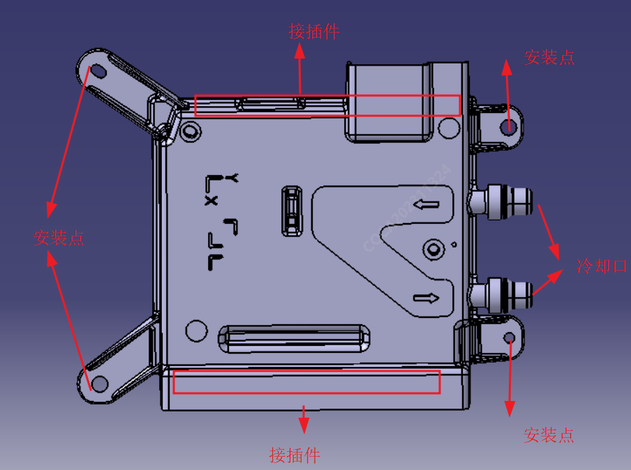

中央计算机拆卸与安装
拆卸
1、使用中控大屏下拉菜单栏，点击车辆下电，保证车辆下电状态：使用螺丝刀或者花型批头等工具，拆下副驾脚踏位置的内饰板、地毯和泡沫块，露出中央计算机（J6M），具体内饰板如下图所示：

2、使用 M6 套筒，拆下 4 颗固定螺栓，取下线束连接器。

3、取下冷却水管接头，取下中央计算机。
注意：
①由于冷却水管中有冷却水，需要使用干净且完好的袋子，完全接住 2 个冷却水管和控制器液冷口，直到管路中、和控制器中无冷却液残留。
②将袋子中的冷却液转至量杯中保存，待重新安装、连接好J6M 的冷却管路后，将量杯中的冷却液倒回至冷却液壶。
安装
安装顺序：1、将线束接插到控制器上；2、再将控制器使用螺栓固定到下车体上；3、接回冷却水管，倒回量杯中的冷却液；4、确认冷却液无渗漏后，最后将地毯等覆盖件和内饰板复原。